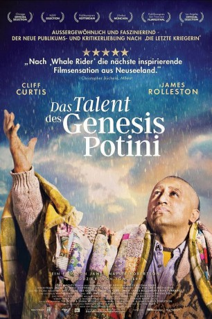

#4711 Das Talent des Genesis Potini
 gesehen am 11.11.2016
gesehen am 11.11.2016
 
 IMDB-Wertung: 7.6 / 10
IMDB-Wertung: 7.6 / 10  Metascore: 0
Metascore: 0 
Genesisi Potini war in seiner neuseeländischen Gemeinde eine Berühmtheit als weltweit erfolgreicher Speed-Schachspieler. Neben seinen sportlichen Erfolgen litt er aber gesundheitlich an einer bipolaren Störung, was ihn immer wieder an seine Grenzen brachte. Ein Ziel hatte er vor Augen, als er zusammen mit zwei Freunden einen Schachklub für benachteiligte Kinder gründete und die zunächst am Schachspiel nur begrenzt interessierten Jugendlichen für einen Wettkampf fit machte.
Jahr: 2014
Dauer: 124 Minuten
FSK: 12
Land: Neuseeland Studio: Koch MediaTonspuren: DTS - ,
Untertitel: Deutsch,
Auflösung: 1080p (1920x816) Größe: 5928 MB
Genre: Drama
Regisseur: James Napier Robertson
Drehbuch: Simon Barrett
Soundtrack:
Darsteller:
 Cliff Curtis als Genesis
Cliff Curtis als Genesis- James Rolleston als Mana
 Xavier Horan als Jedi
Xavier Horan als Jedi- James Napier Robertson als Dave
- Sia Trokenheim als Nurse
 Shane Rangi als Police Officer #1
Shane Rangi als Police Officer #1 Rachel House als Vagrant Woman
Rachel House als Vagrant Woman- Wichman Patricia als Rip's Mother
 Andrew Stehlin als Vagrant Heavy
Andrew Stehlin als Vagrant Heavy- Kirk Torrance als Noble
- Miriama McDowell als Sandy
- Barry Te Hira als Mutt
- Wayne Hapi als Ariki
- Lyel Timu als Rangimarie
- Te Ahorangi Retimana-Martin als Rusty
- Calae Hignett-Morgan als Piripi
- Te Rua Rehu-Martin als Murray
- Niwa Whatuira als Michael
- Lionel Wellington als Rip
- Wesley Broadfoot als Nathan
- Tuhoe Isaac als Blood
- Andrew Grainger als Clive
- Shaden Te Huna als Young Genesis
- Dante Nathuran als Young Ariki
- Pat Napier als Registration Lady
- Kuli Tonga als Truck
- Quade Roiri als Rangi
 John Leigh als Gift Shop Owner
John Leigh als Gift Shop Owner- Thomas Kiwi als Police Officer #2
- Jim Marbrook als Red Faced Man
- Jon Brazier als Dr. Andrews
- Karlos Wrennall als Liquor Store Owner
- Shane Dawson als Rip's Dad
- John Robertson als Chess Coach #1
- Shane 'Jedi' Fitzgerald als Mark
- Marietta Apulu als Marietta
- Christopher Kessell als Tom Michaels
- Jacob Tetton als Jacob
- Roseanne Liang als Nurse , uncredited
 Joseph Oliveira als Store Clerk , uncredited
Joseph Oliveira als Store Clerk , uncredited
Datei: X:\2014(N-Z)\Talent des Genesis Potini, Das (2014, FSK12, 1920x816).mkv seit 08.11.2016
Festplatte: HD 2013(I-Z)-2014(A-Z)
 Es gibt insgesamt 163 Filme in der Gruppe '2014(N-Z)'
Es gibt insgesamt 163 Filme in der Gruppe '2014(N-Z)'